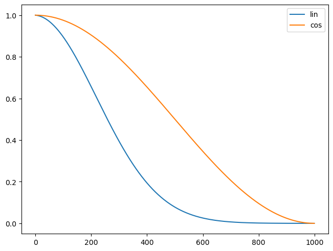
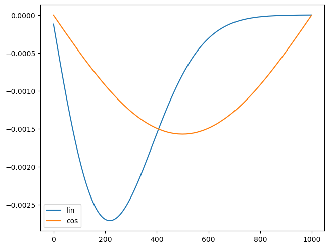
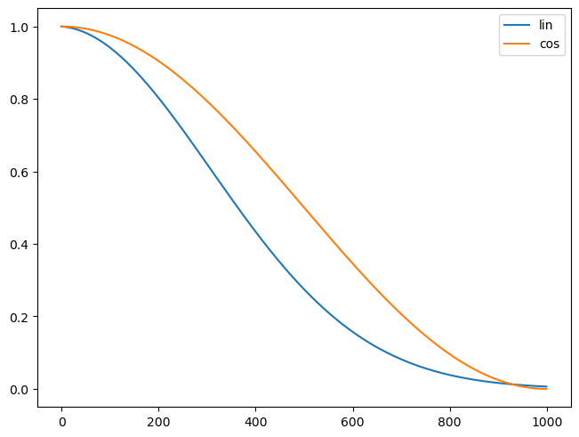
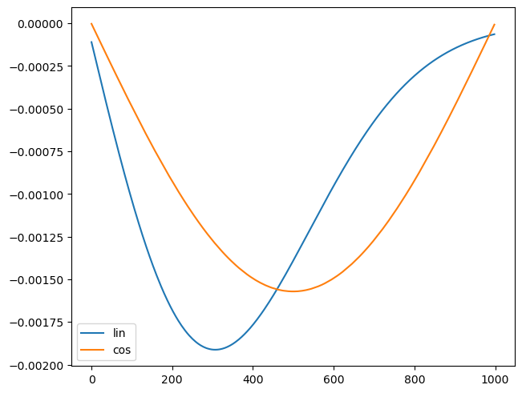
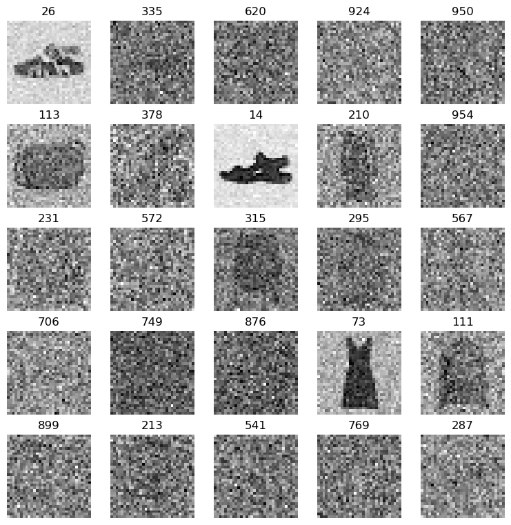
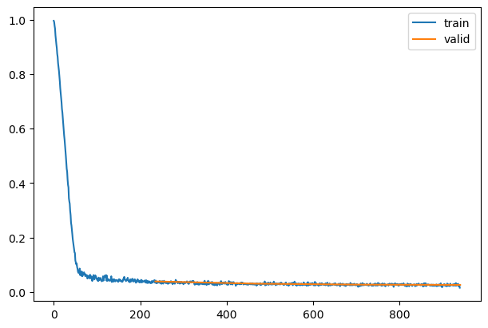
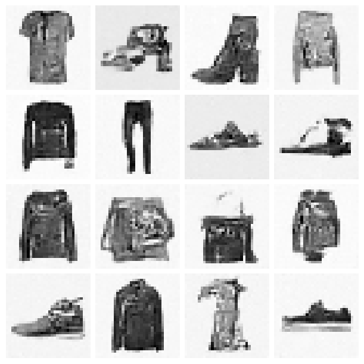
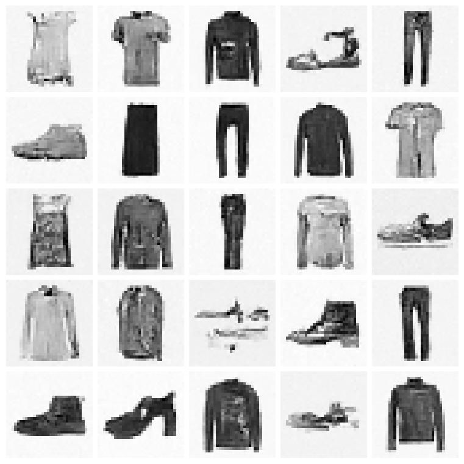

import osDenoising Diffusion Probabilistic Models with miniai
- skip_showdoc: true
Imports
import pickle,gzip,math,os,time,shutil,torch,random,logging
import fastcore.all as fc,matplotlib as mpl,numpy as np,matplotlib.pyplot as plt
from collections.abc import Mapping
from pathlib import Path
from functools import partial
from fastcore.foundation import L
import torchvision.transforms.functional as TF,torch.nn.functional as F
from torch import tensor,nn,optim
from torch.utils.data import DataLoader,default_collate
from torch.nn import init
from torch.optim import lr_scheduler
from fastAIcourse.datasets import *
from fastAIcourse.conv import *
from fastAIcourse.learner import *
from fastAIcourse.activations import *
from fastAIcourse.init import *
from fastAIcourse.sgd import *
from fastAIcourse.resnet import *
from fastAIcourse.augment import *
from fastAIcourse.accel import *from torcheval.metrics import MulticlassAccuracy
from datasets import load_dataset,load_dataset_builder
mpl.rcParams['image.cmap'] = 'gray_r'
logging.disable(logging.WARNING)
set_seed(42)
if fc.defaults.cpus>8: fc.defaults.cpus=8xl,yl = 'image','label'
name = "fashion_mnist"
dsd = load_dataset(name)
@inplace
def transformi(b): b[xl] = [F.pad(TF.to_tensor(o), (2,2,2,2))-0.5 for o in b[xl]]
bs = 256
tds = dsd.with_transform(transformi)
dls = DataLoaders.from_dd(tds, bs, num_workers=8)from types import SimpleNamespacedef linear_sched(betamin=0.0001,betamax=0.02,n_steps=1000):
beta = torch.linspace(betamin, betamax, n_steps)
return SimpleNamespace(a=1.-beta, abar=(1.-beta).cumprod(dim=0), sig=beta.sqrt())def abar(t, T): return (t/T*math.pi/2).cos()**2def cos_sched(n_steps=1000):
ts = torch.linspace(0, n_steps-1, n_steps)
ab = abar(ts,n_steps)
alp = ab/abar(ts-1,n_steps)
return SimpleNamespace(a=alp, abar=ab, sig=(1-alp).sqrt())lin_abar = linear_sched().abar
cos_abar = cos_sched().abar
plt.plot(lin_abar, label='lin')
plt.plot(cos_abar, label='cos')
plt.legend();
plt.plot(lin_abar[1:]-lin_abar[:-1], label='lin')
plt.plot(cos_abar[1:]-cos_abar[:-1], label='cos')
plt.legend();
lin_abar = linear_sched(betamax=0.01).abar
plt.plot(lin_abar, label='lin')
plt.plot(cos_abar, label='cos')
plt.legend();
plt.plot(lin_abar[1:]-lin_abar[:-1], label='lin')
plt.plot(cos_abar[1:]-cos_abar[:-1], label='cos')
plt.legend();
n_steps = 1000
lin_abar = linear_sched(betamax=0.01)
alphabar = lin_abar.abar
alpha = lin_abar.a
sigma = lin_abar.sigdef noisify(x0, ᾱ):
device = x0.device
n = len(x0)
t = torch.randint(0, n_steps, (n,), dtype=torch.long)
ε = torch.randn(x0.shape, device=device)
ᾱ_t = ᾱ[t].reshape(-1, 1, 1, 1).to(device)
xt = ᾱ_t.sqrt()*x0 + (1-ᾱ_t).sqrt()*ε
return (xt, t.to(device)), εdt = dls.train
xb,yb = next(iter(dt))(xt,t),ε = noisify(xb[:25],alphabar)
ttensor([ 26, 335, 620, 924, 950, 113, 378, 14, 210, 954, 231, 572, 315, 295, 567, 706, 749, 876, 73, 111, 899, 213, 541, 769, 287])titles = fc.map_ex(t[:25], '{}')
show_images(xt[:25], imsize=1.5, titles=titles)
Training
from diffusers import UNet2DModelclass UNet(UNet2DModel):
def forward(self, x): return super().forward(*x).sampledef init_ddpm(model):
for o in model.down_blocks:
for p in o.resnets:
p.conv2.weight.data.zero_()
for p in fc.L(o.downsamplers): init.orthogonal_(p.conv.weight)
for o in model.up_blocks:
for p in o.resnets: p.conv2.weight.data.zero_()
model.conv_out.weight.data.zero_()def collate_ddpm(b): return noisify(default_collate(b)[xl], alphabar)
def dl_ddpm(ds, nw=4): return DataLoader(ds, batch_size=bs, collate_fn=collate_ddpm, num_workers=nw)dls = DataLoaders(dl_ddpm(tds['train']), dl_ddpm(tds['test']))lr = 1e-2
epochs = 4
opt_func = partial(optim.AdamW, eps=1e-5)
tmax = epochs * len(dls.train)
sched = partial(lr_scheduler.OneCycleLR, max_lr=lr, total_steps=tmax)
cbs = [DeviceCB(), MixedPrecision(), ProgressCB(plot=True), MetricsCB(), BatchSchedCB(sched)]
model = UNet(in_channels=1, out_channels=1, block_out_channels=(16, 32, 64, 128), norm_num_groups=8)
init_ddpm(model)
learn = Learner(model, dls, nn.MSELoss(), lr=lr, cbs=cbs, opt_func=opt_func)learn.fit(epochs)| loss | epoch | train |
|---|---|---|
| 0.158 | 0 | train |
| 0.038 | 0 | eval |
| 0.032 | 1 | train |
| 0.030 | 1 | eval |
| 0.028 | 2 | train |
| 0.027 | 2 | eval |
| 0.026 | 3 | train |
| 0.026 | 3 | eval |

mdl_path = Path('models')torch.save(learn.model, mdl_path/'fashion_ddpm3_25.pkl')model = torch.load(mdl_path/'fashion_ddpm3_25.pkl').cuda()@torch.no_grad()
def sample(model, sz):
ps = next(model.parameters())
x_t = torch.randn(sz).to(ps)
preds = []
for t in reversed(range(n_steps)):
t_batch = torch.full((x_t.shape[0],), t, device=ps.device, dtype=torch.long)
z = (torch.randn(x_t.shape) if t > 0 else torch.zeros(x_t.shape)).to(ps)
ᾱ_t1 = alphabar[t-1] if t > 0 else torch.tensor(1)
b̄_t = 1-alphabar[t]
b̄_t1 = 1-ᾱ_t1
noise = model((x_t, t_batch))
x_0_hat = ((x_t - b̄_t.sqrt() * noise)/alphabar[t].sqrt())
x_t = x_0_hat * ᾱ_t1.sqrt()*(1-alpha[t])/b̄_t + x_t * alpha[t].sqrt()*b̄_t1/b̄_t + sigma[t]*z
preds.append(x_t.float().cpu())
return predsn_samples = 128samples = sample(model, (n_samples, 1, 32, 32))CPU times: user 52.9 s, sys: 4.74 s, total: 57.6 s
Wall time: 57.3 ss = (samples[-1]*2)#.clamp(-1,1)
s.min(),s.max()(tensor(-1.20), tensor(1.56))show_images(s[:16], imsize=1.5)
@inplace
def transformi2(b): b[xl] = [F.pad(TF.to_tensor(o), (2,2,2,2))*2-1 for o in b[xl]]
tds2 = dsd.with_transform(transformi2)
dls2 = DataLoaders.from_dd(tds2, bs, num_workers=fc.defaults.cpus)
cmodel = torch.load('models/data_aug2.pkl')
del(cmodel[8])
del(cmodel[7])from fastAIcourse.fid import ImageEvalie = ImageEval(cmodel, dls2, cbs=[DeviceCB()])ie.fid(s)1753.90234375s.min(),s.max()(tensor(-7.90), tensor(7.56))ie.fid(xb*2)13.9842529296875Skip sampling
@torch.no_grad()
def sample_skip(model, sz):
ps = next(model.parameters())
x_t = torch.randn(sz).to(ps)
preds = []
for t in reversed(range(n_steps)):
t_batch = torch.full((x_t.shape[0],), t, device=ps.device, dtype=torch.long)
z = (torch.randn(x_t.shape) if t > 0 else torch.zeros(x_t.shape)).to(ps)
ᾱ_t1 = alphabar[t-1] if t > 0 else torch.tensor(1)
b̄_t = 1-alphabar[t]
b̄_t1 = 1-ᾱ_t1
if t%3==0 or t<50: noise = model((x_t, t_batch))
x_0_hat = ((x_t - b̄_t.sqrt() * noise)/alphabar[t].sqrt())
x_t = x_0_hat * ᾱ_t1.sqrt()*(1-alpha[t])/b̄_t + x_t * alpha[t].sqrt()*b̄_t1/b̄_t + sigma[t]*z
preds.append(x_t.cpu().float())
return predssamples = sample_skip(model, (n_samples, 1, 32, 32))CPU times: user 20.6 s, sys: 1.71 s, total: 22.3 s
Wall time: 22 ss = (samples[-1]*2)#.clamp(-1,1)show_images(s[:25], imsize=1.5)
ie.fid(s)60.546875@torch.no_grad()
def sample2(model, sz):
ps = next(model.parameters())
x_t = torch.randn(sz).to(ps)
sample_at = {t for t in range(n_steps) if (t+101)%((t+101)//100)==0}
preds = []
for t in reversed(range(n_steps)):
t_batch = torch.full((x_t.shape[0],), t, device=ps.device, dtype=torch.long)
z = (torch.randn(x_t.shape) if t > 0 else torch.zeros(x_t.shape)).to(ps)
ᾱ_t1 = alphabar[t-1] if t > 0 else torch.tensor(1)
b̄_t = 1-alphabar[t]
b̄_t1 = 1-ᾱ_t1
if t in sample_at: noise = model((x_t, t_batch))
x_0_hat = ((x_t - b̄_t.sqrt() * noise)/alphabar[t].sqrt())
x_t = x_0_hat * ᾱ_t1.sqrt()*(1-alpha[t])/b̄_t + x_t * alpha[t].sqrt()*b̄_t1/b̄_t + sigma[t]*z
if t in sample_at: preds.append(x_t.float().cpu())
return predssamples = sample2(model, (n_samples, 1, 32, 32))CPU times: user 17.7 s, sys: 1.76 s, total: 19.4 s
Wall time: 17.9 ss = (samples[-1]*2)#.clamp(-1,1)show_images(s[:25], imsize=1.5)
ie.fid(s)64.6614990234375